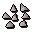
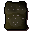
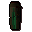
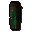

Steel studs

| Config name | studs |
| Item id | 2370 |
| Value | 150 gp |
| Weight | 3lb |
| Members | Yes |
| Tradeable | Yes |
| Stackable | No |
| Defined in | scripts/skill_crafting/configs/studded/studded.obj |
Steel studs
A set of studs for leather armour.
How to make
| Skill | Level | XP | Ingredients | Tool | How | Where | Makes |
|---|---|---|---|---|---|---|---|
| Smithing | 36 | 37.5 | interface | anvil | 1 |
Used to make
| Skill | Level | XP | Ingredients | Tool | How | Where | Makes |
|---|---|---|---|---|---|---|---|
| Crafting | 41 | 40.0 | use on item |  Studded bodymembers | |||
| Crafting | 44 | 42.0 |  Leather chaps, Steel studs | use on item |  Studded chapsmembers |
Referenced in scripts
scripts/levelup/scripts/levelup_unlocks_smithing.rs2scripts/minigames/game_ranging/scripts/armour_salesman.rs2scripts/skill_crafting/scripts/studded/studded.rs2scripts/skill_smithing/scripts/smithing/smithing.rs2